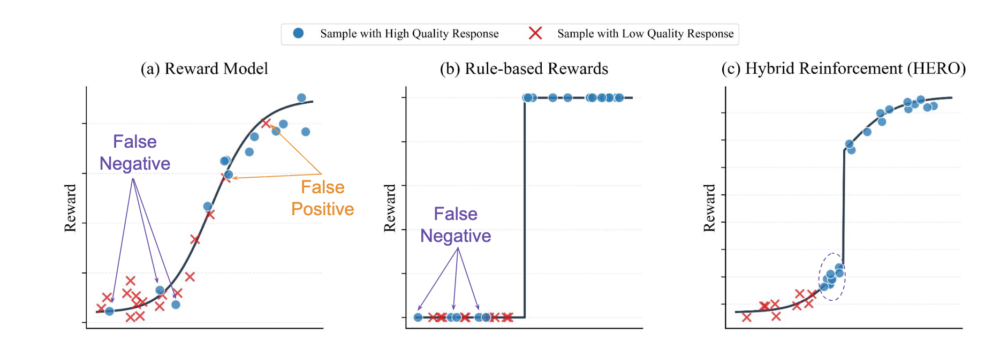
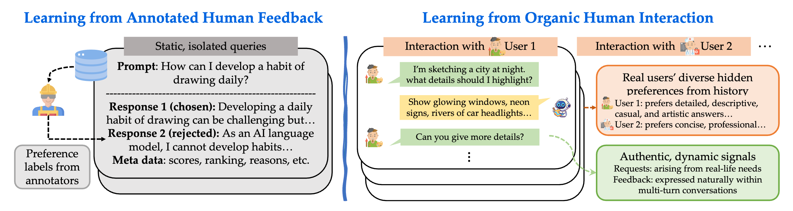
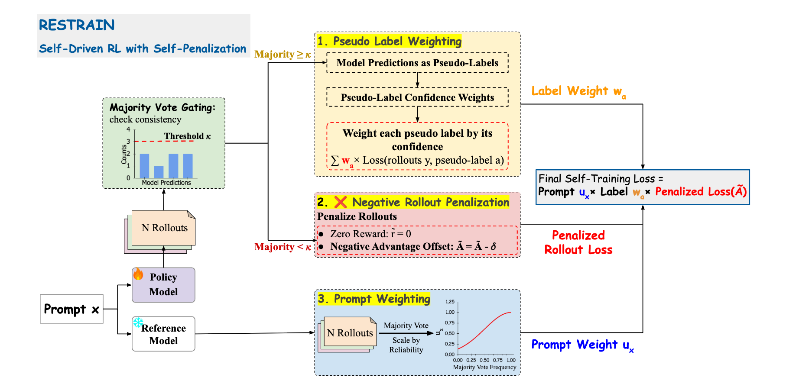
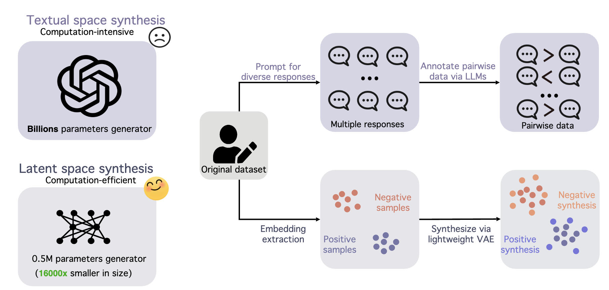
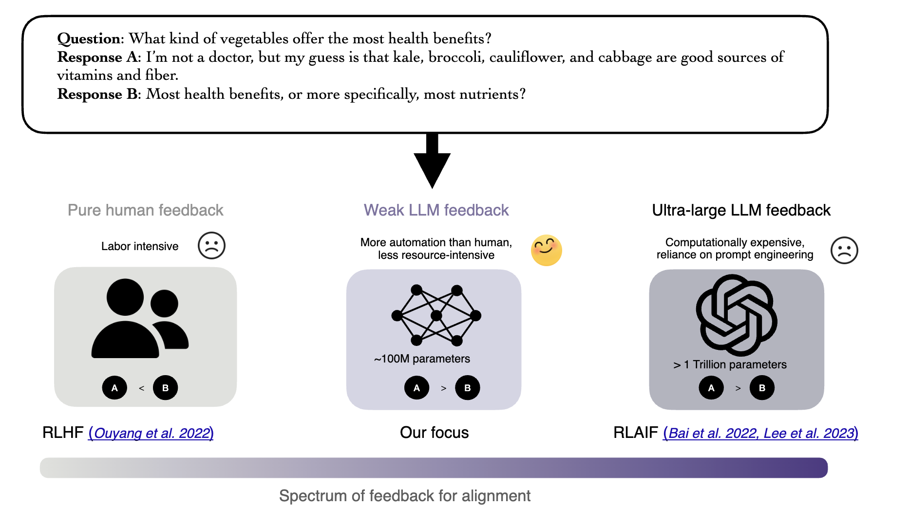
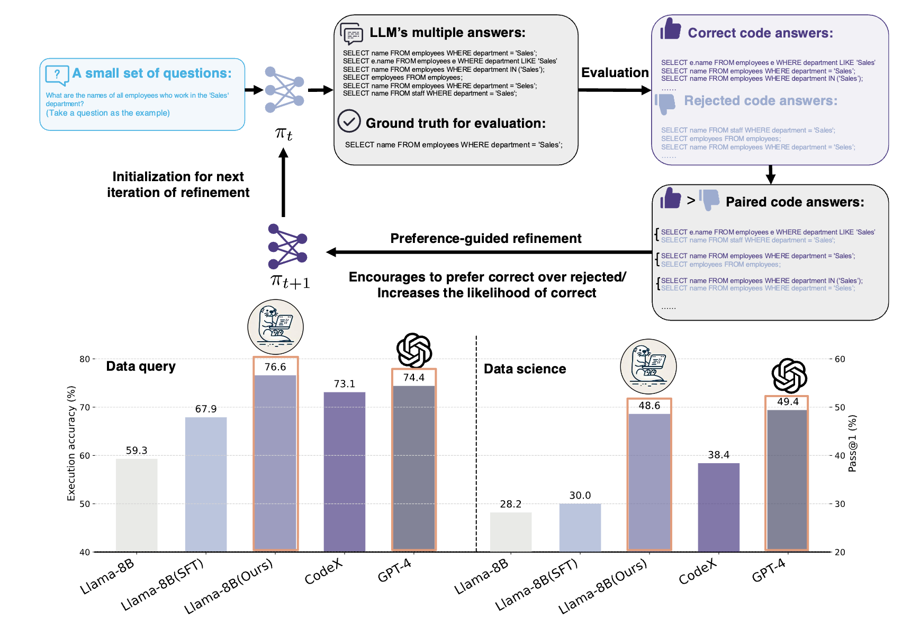
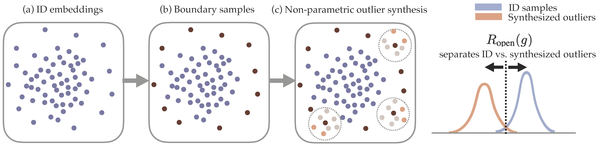
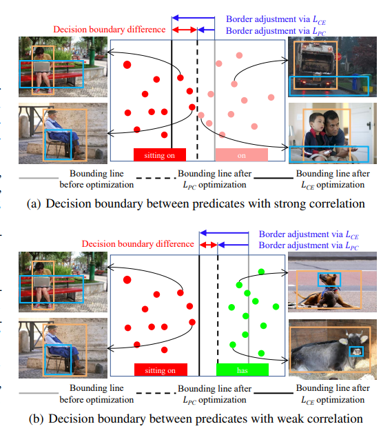
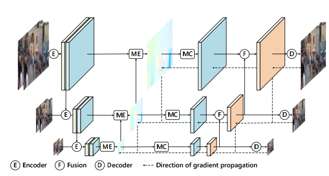

|
I am a Ph.D. student in the Computer Sciences Department at the University of Wisconsin–Madison. My current research interests focus on post-training of large language models, AI agents, and multi-modality, including LLM alignment, reasoning, and reward modeling. I work as a research assistant at UW–Madison, under the supervision of Sharon Li. I am currently working as a Research Scientist Intern at Meta FAIR with Dr. Jason Weston and Dr. Ping Yu, focusing on improving LLM reasoning and alignment beyond purely binary, verifiable rewards. Previously, I worked as a Research Scientist Intern at Adobe Research with Dr. Xiang Chen and Dr. Tong Yu, focusing on large language models for code generation. I graduated from Wuhan University (WHU) with a B.Eng. in Information Engineering, where my advisor was Zhenzhong Chen. I have also worked as a research intern at Shanghai AI Lab, where my mentor was Peng Gao. Email / Google Scholar / Github / LinkedIn / CV |

|
|
My research interests span machine learning, large language models, and multimodal learning. I focus particularly on LLM alignment and post-training, reasoning with synthetic data, and open-world robustness. Recent work shows that synthetic data from smaller, weaker models can be more effective than data from larger models for improving LLM reasoning. Representative papers are highlighted. (* indicates equal contribution) |
|
|
|  |
Leitian Tao, Ilia Kulikov, Swarnadeep Saha, Tianlu Wang, Jing Xu, Sharon Li, Yixuan Li, Jason Weston, Ping Yu Preprint [arXiv] [BibTeX]@article{tao2025hybrid,
title = {Hybrid Reinforcement: When Reward Is Sparse, It's Better to Be Dense},
author = {Tao, Leitian and Kulikov, Ilia and Saha, Swarnadeep and Wang, Tianlu and Xu, Jing and Li, Sharon and Li, Yixuan and Weston, Jason E. and Yu, Ping},
journal = {arXiv preprint arXiv:2510.07242},
year = {2025}
}
|
|  |
Chuanyang Jin, Jing Xu, Bo Liu, Leitian Tao, Olga Golovneva, Tianmin Shu, Wenting Zhao, Xian Li, Jason Weston Preprint [arXiv] [BibTeX]@article{jin2025era,
title = {The Era of Real-World Human Interaction: RL from User Conversations},
author = {Jin, Chuanyang and Xu, Jing and Liu, Bo and Tao, Leitian and Golovneva, Olga and Shu, Tianmin and Zhao, Wenting and Li, Xian and Weston, Jason},
journal = {arXiv preprint arXiv:2509.25137},
year = {2025}
}
|
|  |
Zhaoning Yu, Will Su, Leitian Tao, Haozhu Wang, Aashu Singh, Hanchao Yu, Jianyu Wang, Hongyang Gao, Weizhe Yuan, Jason Weston, Ping Yu, Jing Xu Preprint [arXiv] [BibTeX]@article{yu2025restrain,
title = {RESTRAIN: From Spurious Votes to Signals -- Self-Driven RL with Self-Penalization},
author = {Yu, Zhaoning and Su, Will and Tao, Leitian and Wang, Haozhu and Singh, Aashu and Yu, Hanchao and Wang, Jianyu and Gao, Hongyang and Yuan, Weizhe and Weston, Jason and Yu, Ping and Xu, Jing},
journal = {arXiv preprint arXiv:2510.02172},
year = {2025}
}
|
|
|
|  |
Leitian Tao, Xuefeng Du, Sharon Li NeurIPS 2025 [arXiv] [OpenReview] [BibTeX]@inproceedings{tao2025limited,
title = {Limited Preference Data? Learning Better Reward Model with Latent Space Synthesis},
author = {Tao, Leitian and Du, Xuefeng and Li, Sharon},
booktitle = {Advances in Neural Information Processing Systems (NeurIPS)},
year = {2025},
note = {arXiv:2509.26074}
}
|
|  |
Leitian Tao, Yixuan Li ICLR 2025 [arXiv] [OpenReview] [BibTeX]@inproceedings{tao2025weak,
title = {Your Weak LLM is Secretly a Strong Teacher for Alignment},
author = {Tao, Leitian and Li, Yixuan},
booktitle = {International Conference on Learning Representations (ICLR)},
year = {2025},
note = {arXiv:2409.08813}
}
|
|  |
Leitian Tao, Xiang Chen, Tong Yu, Tung Mai, Ryan Rossi, Yixuan Li, Saayan Mitra Transactions on Machine Learning Research (TMLR) [arXiv] [TMLR page] [BibTeX]@article{tao2025codelutra,
title = {CodeLutra: Boosting LLM Code Generation via Preference-Guided Refinement},
author = {Tao, Leitian and Chen, Xiang and Yu, Tong and Mai, Tung and Rossi, Ryan A. and Li, Yixuan and Mitra, Saayan},
journal = {Transactions on Machine Learning Research (TMLR)},
year = {2025},
note = {arXiv:2411.05199}
}
|
|  |
Leitian Tao, Xuefeng Du, Xiaojin Zhu, Yixuan Li ICLR 2023 [arXiv] [OpenReview] [BibTeX]@inproceedings{tao2023non,
title = {Non-Parametric Outlier Synthesis},
author = {Tao, Leitian and Du, Xuefeng and Zhu, Xiaojin and Li, Yixuan},
booktitle = {International Conference on Learning Representations (ICLR)},
year = {2023},
note = {arXiv:2303.02966}
}
|
|  |
Leitian Tao, Li Mi, Nannan Li, Xianhang Cheng, Yaosi Hu, Zhenzhong Chen IEEE Transactions on Image Processing (TIP) [IEEE] [arXiv] [BibTeX]@article{tao2022predicate,
title = {Predicate Correlation Learning for Scene Graph Generation},
author = {Tao, Leitian and Mi, Li and Li, Nannan and Cheng, Xianhang and Hu, Yaosi and Chen, Zhenzhong},
journal = {IEEE Transactions on Image Processing},
volume = {31},
pages = {4173--4185},
year = {2022}
}
|
|  |
Chaoqi Chen, Luyao Tang, Leitian Tao, Hong-Yu Zhou, Yue Huang, Xiaoguang Han, Yizhou Yu ICCV 2023 [arXiv] [PDF] [BibTeX]@inproceedings{chen2023activate,
title = {Activate and Reject: Towards Safe Domain Generalization under Category Shift},
author = {Chen, Chaoqi and Tang, Luyao and Tao, Leitian and Zhou, Hong-Yu and Huang, Yue and Han, Xiaoguang and Yu, Yizhou},
booktitle = {Proceedings of the IEEE/CVF International Conference on Computer Vision (ICCV)},
year = {2023}
}
|
|
Journal Reviewer: IJCV Conference Reviewer: ICML, ICLR, NeurIPS, ICME |
|
Template inspired by Jon Barron's website.
|